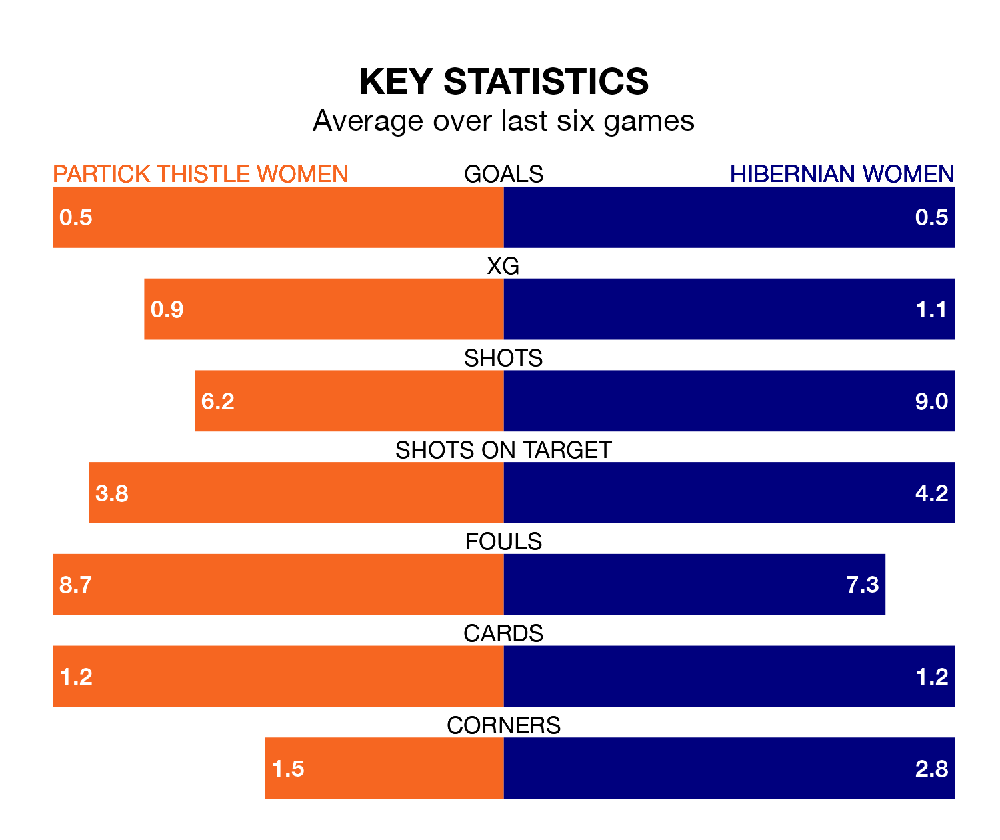

Partick Thistle Women welcome Hibernian Women to Petershill Park on late Wednesday looking to pick up points to end their six-game losing streak.
Partick Thistle's struggles have left them with no points from their last six SWPL 1 matches, while their opponents have earned three from a possible 18.
In the last 10 years, Partick Thistle and Hibernian have played each other on 11 occasions. Partick Thistle won three of them, Hibernian six, and they drew twice.
On average, Thistle scored 0.9 goals and Hibs 1.5 in those matches.
Their last meeting was on March 17, when Hibernian won 2-0 at home.
With 37 goals in 27 games so far this season, Partick Thistle are scoring at below the league average rate with 1.4 goals per game. But they are conceding fewer than average too, letting in 52 goals at a rate of 1.9 per game.
Hibernian, meanwhile, are above average scorers, with 2.3 goals per game, compared to a league average of 2.1. They have conceded 1.4 goals per game.
In Jorian Baucom, Hibs have one of the league's sharpest shooters so far this season. She has notched 21 goals in 27 appearances, to sit third in the scoring charts.
Her goal rate of one every 97 minutes is much quicker than that of Cara Henderson, Thistle's top scorer with a goal every 218 minutes, and a total of 10 goals in 27 games.
The visitors are fifth in the table after 27 games, of which they have won 13 and drawn three, earning 42 points.
The home team are one place behind Hibernian in sixth, with 12 wins and two draws putting them on 38 points.
Partick Thistle's last match was on April 21, a 3-1 loss against Rangers Women, with Imogen Longcake getting the goal for Thistle.
Hibernian lost 1-0 against Glasgow City Women last time out, also on April 21.
Updated: 10:44 (UTC), 30/04/24